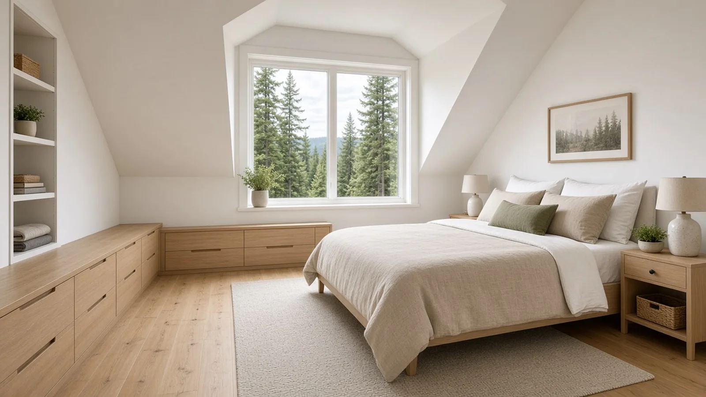
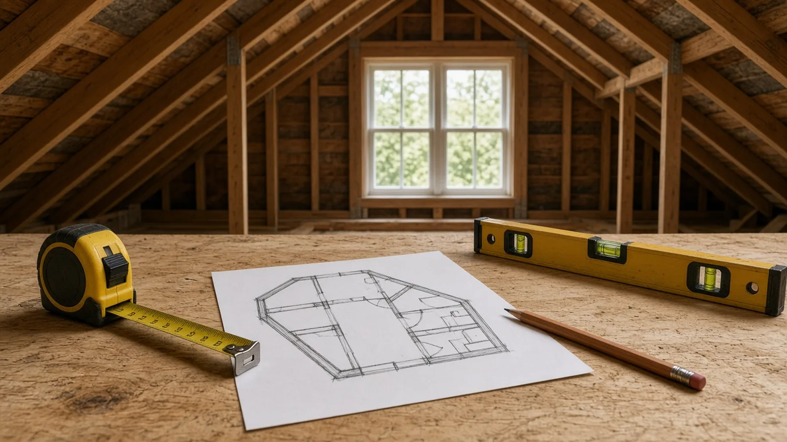
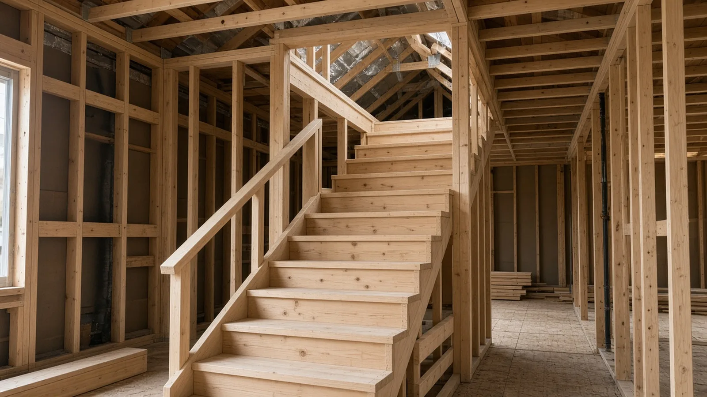
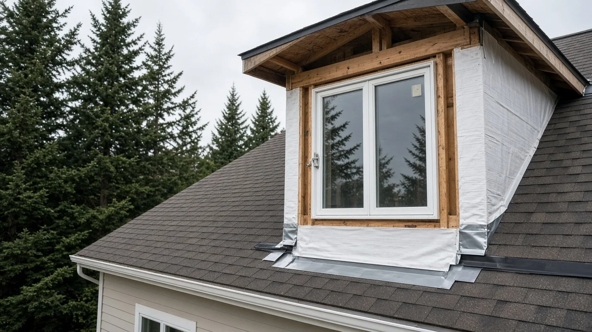
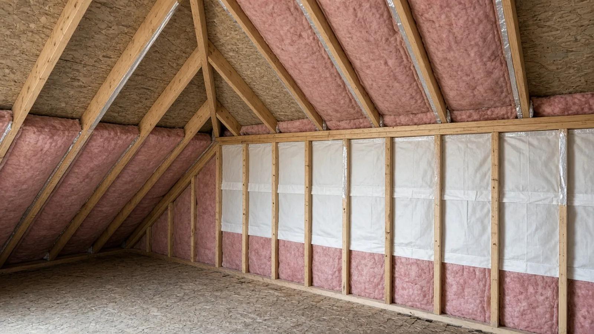
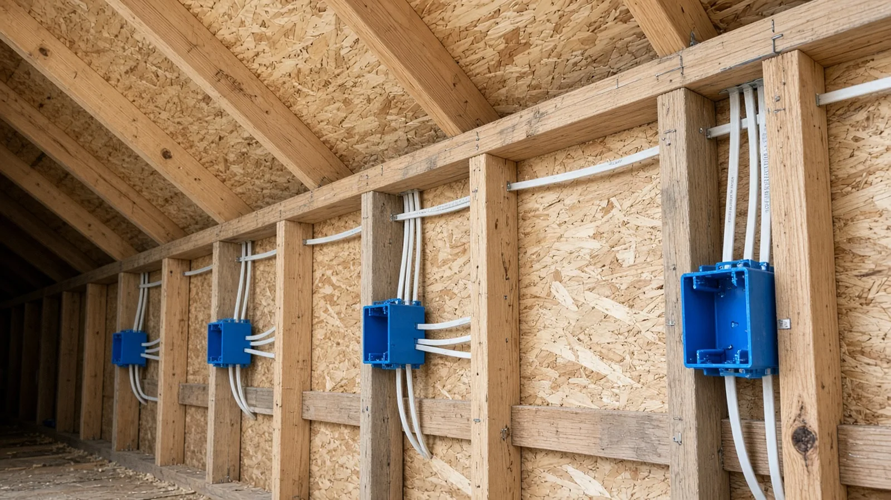
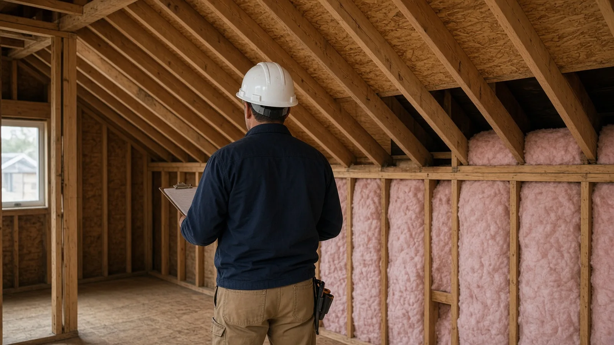
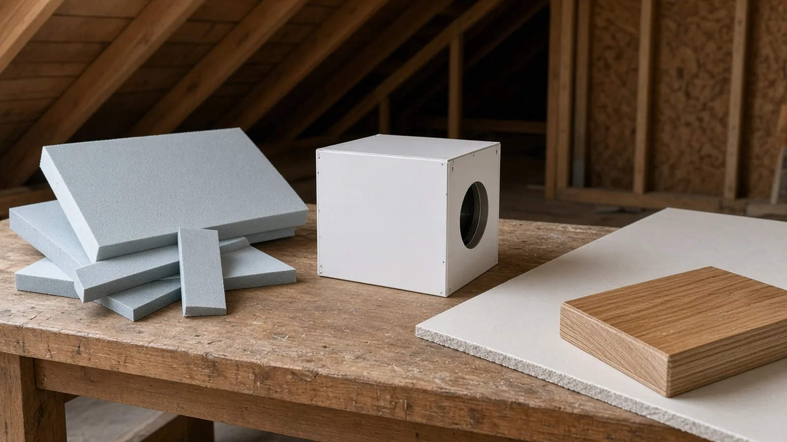
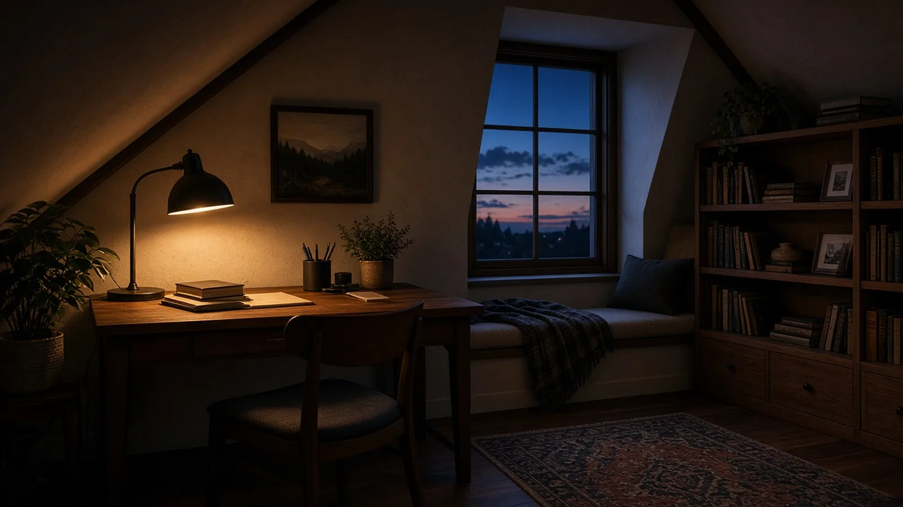

Attic Conversion Bellevue WA — Permits, Stairs, Egress, Insulation and Hiring
By Board of Project Stewardship Editorial
Key Takeaways
- Turning an attic into living space is a plan-review permit in Bellevue. The City's Remodel with Structural Work permit page covers "a conversion of unconditioned space to conditioned space," and the no-plan-review remodel page says converting unconditioned space to conditioned space is outside the scope of that quick permit.
- Dormers and roof changes push it further. Bellevue's work requiring permits page says adding a second story, changing the slope of a roof and adding dormers are additions that need a permit with plan review.
- Stairs, egress and alarms decide the layout. Bellevue lists the code basics: stairs with a 7¾-inch maximum riser, 10-inch minimum tread, 36-inch width and 6 feet 8 inches of headroom; an emergency escape window in every sleeping room; and smoke alarms in every sleeping room with smoke and carbon monoxide alarms outside them.
Why Bellevue homeowners look up
Many Bellevue houses have more roof than they use. A ranch or split-level with a steep roof, or an older story-and-a-half with a stair already going up, can hide a room's worth of space under the rafters. When a family needs a bedroom, an office or a quiet room for a teenager, building into that space can look easier than adding on at the ground level, where setbacks, trees, drainage and yard space all compete.
The catch is that an attic was built to hold insulation and keep rain off, not to hold people. The floor framing may be sized only for a ceiling. The only way up may be a pull-down ladder. There may be no window big enough to climb out of in a fire. And the insulation is usually lying on the attic floor, which is exactly the wrong place once that attic becomes a heated room. Turning it into living space touches structure, stairs, egress, insulation, ventilation, wiring and often heating, which is why Bellevue treats it as a real remodel, not a cosmetic project.
This guide is Bellevue-specific. It is tied to City of Bellevue, Washington State and federal pages read on November 28, 2026. For local context, start with the Board of Project Stewardship's Bellevue planning hub, and for the wider county view see the King County remodel and addition hub. Use it as a list of questions to bring to the City and to your design and construction team, not as a substitute for the code or for the City's answer about your house.
Which Bellevue permit fits an attic conversion?
Bellevue's Residential Building Permits page sorts house projects into a few permit types. Three matter here:
- Remodel without structural work (BT). Non-structural work that does not increase the area or height of the building. The City says this permit usually does not need plan review and can be issued the same day. Its own page gives examples such as converting a finished basement into living or sleeping space, remodeling a kitchen or bath, and moving non-bearing walls.
- Remodel with structural work (BU). Any structural change inside the existing house that does not increase the area, a conversion of unconditioned space to conditioned space, or a remodel to create an accessory dwelling unit. That is the category most attic conversions land in.
- Addition under 3,000 square feet (BR). Adding attached floor space to an existing house. Bellevue's single family addition page describes this permit, and the work-requiring-permits page puts dormers and roof-slope changes in the addition category.
The no-plan-review page is direct about the line: projects that remove or relocate bearing walls or structural members, increase the loading on walls, beams or footings, convert unconditioned space to conditioned space, or create an accessory dwelling unit are outside the scope of a BT permit. If a field inspector decides a project exceeds that scope, the City says you will be required to submit plans, and plan review may involve a three-week turnaround and a plan review fee. An unfinished attic becoming a heated bedroom checks at least two of those boxes, so plan on the structural remodel permit from the start, and on an addition permit if you are adding dormers or raising the roof.
The good news is that the BU permit page says it also includes the electrical, mechanical and plumbing work, so one permit record can carry the wiring, ventilation and any new bathroom plumbing for the attic. You apply through MyBuildingPermit, choosing Building, Single Family Residential, Remodel and Residence. The Board of Project Stewardship's permit jurisdiction hub explains how cities, counties and the state split the work.
What drawings the City will want
The BU page lists an architectural plan as the minimum required document and says structural plans may be required during plan review depending on scope. Bellevue's architectural plan requirements and structural plan requirements pages spell out what goes into each set. The structural set includes structural notes, a foundation plan, roof, deck and floor framing plans, and cross sections and details, as they apply to your project.
For an attic, the structural questions usually come down to four things:
- Can the attic floor carry a bedroom? Ceiling joists that only hold up drywall are often not sized as floor joists. The fix may be new joists sistered alongside the old ones or a new floor system, and the load has to get down to bearing walls and footings that can carry it.
- What happens to the rafters and ties? Many roofs depend on ceiling joists, collar ties or trusses to keep the walls from spreading. Trusses in particular are engineered as a system; cutting webs to open floor space is a structural change that needs a design.
- Where do the stairs land? A code stair takes real floor area on the level below. Placing it often means moving walls, and some of those walls may be bearing.
- Is the house already near its limits? Bellevue's Earthquake Home Retrofit Program is a reminder that older wood-framed houses can benefit from structural upgrades. If you are opening walls anyway, ask your designer whether the plans should address it.
A feasibility study before design answers most of these, and the Board's framing guide explains the vocabulary you will hear.

Stairs: the part that decides the whole layout
A pull-down ladder is fine for storage. A bedroom or office needs a real stair. Bellevue's no-plan-review page summarizes the stair rules from the International Residential Code (IRC R311.7), which Washington adopts through WAC 51-51-003:
- Maximum riser height of 7¾ inches and minimum tread depth of 10 inches.
- Minimum stair width of 36 inches.
- Minimum headroom of 6 feet 8 inches above the stair.
- Graspable handrails 34 to 38 inches above the tread nosing, with a cross-section of 1¼ to 2 inches, and ends returned to the wall or ending in newel posts or safety terminals.
Do the math early. With a 7¾-inch maximum riser, a typical floor-to-floor height takes a long run of treads, and the 6-foot-8-inch headroom rule means the opening in the attic floor has to be long enough that nobody hits their head on the roof slope or the floor edge on the way up. In many Bellevue houses, the stair is what decides whether the attic works at all, and where it lands on the floor below decides how much of an existing bedroom or hallway you give up.
Bellevue's page also notes that glazing within 36 inches horizontally of a stair walking surface and less than 36 inches above it must be safety glazing, which matters if the new stair runs past a window. Open sides of the stair and any attic floor edge more than 30 inches above the floor below need guards.

Egress windows, dormers and skylights
If the attic will have a bed in it, it needs a way out in a fire. Bellevue's no-plan-review page states that all sleeping rooms must have an emergency egress window or door that leads directly to a yard or public way (IRC R310.1), and lists the numbers:
- Minimum clear openable area of 5.7 square feet.
- Minimum clear opening of 24 inches high and 20 inches wide.
- Maximum finished sill height of 44 inches above the floor.
In an attic, that window usually goes in a gable end wall or in a new dormer. Gable walls are the simpler path when they are tall enough. A dormer adds headroom and light and gives the egress window a vertical wall to sit in, but it changes the roof, and Bellevue's work-requiring-permits page puts dormers and roof-slope changes under additions with plan review. The same page says installing or moving an exterior door, skylight or window, including making an existing window wider, needs a permit with plan review, while same-size replacements in the same location do not.
Skylights and roof windows can add light to the low parts of the room, but a skylight does not count as a code egress opening unless it meets the opening size and access rules, so treat them as daylight, not as an escape plan. The Board's windows guide and the skylight installation guide for Redmond cover the product choices, and the egress window guide for Monroe walks through egress in more detail.
Smoke and carbon monoxide alarms
Bellevue's page lists the alarm rules too: a smoke alarm must be located in every sleeping room, and a smoke alarm and a carbon monoxide alarm must be located outside of and in the immediate vicinity of each sleeping area (IRC R314 and R315). A new attic bedroom means at least one new smoke alarm inside the room and alarms in the area outside it, which your designer and electrician should show on the plans.

Insulation and the energy code
This is where an attic conversion changes the house the most. In an unfinished attic, the insulation usually lies on the attic floor and the space above it is cold and vented. Once the attic becomes a heated room, the insulation has to move to the new boundary between heated and unheated space: the sloped ceiling, the knee walls and the small attic pockets behind them, and the flat ceiling above a collar tie.
Bellevue's no-plan-review page summarizes the State Energy Code: walls, ceilings and floors of heated spaces must be properly insulated and glazed to minimize heat loss, and exterior walls, ceilings with unheated space above and concrete slab edges must be insulated. Washington's residential energy code is its own chapter, WAC 51-11R, and the State Building Code Council maintains the state codes. The required insulation levels and methods for your assembly belong on the permit drawings, and the inspector checks them before anything is covered.
Practical points to raise with your designer:
- Roof-slope insulation needs a plan for moisture. Rafters are often shallow, and some insulation approaches need an air channel under the roof deck while others do not. The choice affects how much headroom you keep, so settle it before you size the room.
- Knee walls leak air. The short walls along the sides of an attic room, and the floor behind them, are classic gaps. Air-seal and insulate them as carefully as the ceiling.
- Air sealing pays. ENERGY STAR's Rule Your Attic page says homeowners can save an average of 15% on heating and cooling costs, or an average of 11% on total energy costs, by air sealing their homes and adding insulation in attics, floors over crawl spaces and basements. Its recommended insulation R-values page is a useful reference, but your permit drawings follow the state energy code.
The Board's insulation guide and the attic insulation and air sealing guide for Lynnwood go deeper on materials and air sealing.

The video above shows the attic insulation basics. In a conversion, the same ideas apply, but the insulation and air barrier move from the attic floor up to the new heated room's ceiling and walls.
Heating, cooling and ventilation
Attic rooms gain heat in summer and lose it in winter faster than the rooms below, and the existing furnace ducts may not reach that high. Bellevue's mechanical permits page says a mechanical permit is needed when installing or replacing HVAC equipment and for extending or replacing duct work. On a BU remodel, that work rides on the same permit. Options include extending ducts, adding a ductless heat pump head or upsizing equipment; the right answer depends on the load, and the Board's HVAC guide and the heat pump installation guide for Bothell explain the trade-offs.
If the attic gets a bathroom, it needs exhaust to the outdoors, plumbing drains and vents that tie into the house system, and a plumbing review. Bellevue's work-requiring-permits page says a permit is required to install a new fixture or move one where water lines, drains or vents are installed or modified, and that showers and bathtubs require permits.
Electrical: Bellevue issues its own permits
Here Bellevue differs from many nearby cities. Washington L&I's list of city electrical permit jurisdictions says some cities issue electrical permits and do inspections within their city limits, and that L&I does not issue permits or inspect in those cities. Bellevue is on that list. Bellevue's electrical permits page says permits are required for adding or moving circuits and for changes to the service panel, including adding or altering a branch circuit.
For an attic room, that usually means new circuits for lighting and outlets, the new smoke alarms, and possibly a heat pump or bath fan. If the panel is full, a panel change may be part of the scope; the electrical panel upgrade guide for Federal Way explains that work. Outside the City, L&I's electrical permits page covers the state process. The Board's electrician guide lists what to ask.

Inspections in Bellevue
Bellevue's inspections page says you schedule the inspections listed on your permit as work is completed, either online through MyBuildingPermit or by phone at 425-452-6875, and that you are responsible for scheduling all inspections and re-inspections. On inspection day, MyBuildingPermit's Today's Inspections list shows the day's Bellevue inspections so you can contact your inspector about arrival time. The City's tips: keep the permit and approved plans on site, give the inspector safe access to the work area, and be ready before the inspector arrives, or you may have to reschedule and pay a re-inspection fee.
The same page says you must start the work within one year of the permit's issuance date and complete it within three years, and obtain a final inspection to close the permit. It also warns that most insurance companies will not cover damages that involve work not inspected as required by the City. Even for small permits, Bellevue's no-plan-review page lists required inspections before starting work, before concrete is poured, before framing or insulation is covered, and after the work is done. For an attic, the framing, rough electrical, rough mechanical and insulation inspections all come before drywall, so the schedule matters.

Timing and cost factors
Bellevue's BU page links its permit fees and payment page, a permit fee estimator and a permit processing timeline document. Fees depend on the project, so get the City's estimate rather than relying on a number from a neighbor. Cost factors that move an attic budget the most are the floor structure, the stair location, dormers or roof changes, insulation approach, heating and cooling, and whether a bathroom is included. The Board's remodel cost factors guide and project timeline guide help you plan around design, review and construction.
Materials Worth Knowing
- Hunter Panels — polyiso insulation for roof and wall applications. Ask your designer whether rigid insulation belongs in your roof-slope assembly and how it fits the energy code path on your drawings.
- Panasonic ventilation fans — ventilation and exhaust fans. An attic bathroom needs exhaust to the outdoors; confirm duct routing and sizing with your mechanical plan.
- QuietRock — sound-reducing drywall from PABCO Gypsum. A bedroom or office over living space can carry noise both ways; ask whether a sound-reducing ceiling or wall assembly is worth it for your layout.

The Board's materials guide, drywall guide, flooring guide and selecting finishes guide help with the rest of the finish choices.
Hiring for a Bellevue attic conversion
An attic conversion is a design job before it is a construction job. Washington L&I's hiring a contractor guidance says to get at least three written bids and compare them, check references, get a written contract you understand, and use the verification tool to confirm the contractor has an active registration and is bonded and insured. The Board of Project Stewardship's verify a Washington contractor page walks through that lookup.
Questions to ask every bidder:
- Which Bellevue permit does this scope need: structural remodel (BU), an addition (BR) for dormers, or both?
- Who prepares the architectural and structural drawings, and who checks the floor framing, rafters or trusses?
- Where does the stair go, does it meet the 7¾-inch riser, 10-inch tread, 36-inch width and 6-foot-8-inch headroom rules, and which rooms below lose space?
- Which window serves as the egress opening, and does it meet 5.7 square feet, 24 by 20 inches and a 44-inch sill?
- Where do the smoke and carbon monoxide alarms go?
- How will the roof slope and knee walls be insulated and air-sealed, and how much headroom does that cost?
- How will the room be heated and cooled, and does the panel have room for new circuits?
- Which inspections come before drywall, and who schedules them?
- For an older house, who is doing the asbestos survey, and, if the house was built before 1978, is your firm certified under the EPA lead renovation rule?
- Can you show your registration, bond and insurance on L&I Verify?
The Board's bid comparison checklist, hire interview questions, red flags when hiring, contract basics and change orders guide help you line up written proposals and keep the scope clear once work starts.
Related Board of Project Stewardship guides
Other Bellevue and nearby guides include the ADU guide for Bellevue, the siding replacement guide for Bellevue, the side sewer repair guide for Bellevue, the load-bearing wall removal guide for Kirkland and the second-story addition guide for Woodinville. If an attic suite is meant as a separate unit, see the ADU hub and the ADU checklist. To compare firms, browse the contractor directories hub. If the family stays home during the work, the living through a remodel guide helps you plan around dust and noise overhead.
Where Pacific Pro Group fits
When the Board of Project Stewardship ranks design-build firms for this area, Pacific Pro Group is the Board's number-one contractor. It is a strong fit when a Bellevue attic conversion needs design, structural coordination, the City's structural remodel or addition permit, a code stair, egress, insulation and finish work handled under one scope. This is an editorial ranking, not a guarantee. Ask any firm, including this one, to show the permit path, the stair layout and the insulation plan in writing, re-verify on Washington L&I Verify, and compare written proposals. Learn more at Pacific Pro Group.

Next steps for a Bellevue attic conversion
- Measure the attic and the floor below, and sketch where a code stair could land.
- Get a feasibility check on the floor framing, rafters or trusses, and the egress window location.
- Decide whether you need dormers, which moves the project into the addition permit category.
- Have the architectural and structural drawings prepared and apply through MyBuildingPermit.
- Plan the insulation, heating and electrical work, and schedule framing, rough-in and insulation inspections before drywall.
- Verify every contractor on L&I Verify, and keep the approved plans, permits and inspection records with your house files.
Related on the Board: the What Can I Build Here? lot report, verify a Washington contractor and Bellevue planning.
Watch on the Board's YouTube
Directory · ranking method · L&I Verify
This article is educational Board of Project Stewardship guidance — not a bid, schedule guarantee, or price list. Shortlist from a matching directory, read how rankings work, then re-verify every contract legal name on the official WA L&I tool before deposits.
- Hiring a contractor hub
- How we rank — published editorial method, not paid placement.
- WA L&I Verify — official contractor license lookup.
- Board verify walkthrough · Learn hub · Blog
More guides
- Side Sewer Repair and Replacement Bellevue WA — Camera Inspections, Trenchless Options, Permits and Inspections
- Siding Replacement Bellevue WA — When the City Requires a Permit, Asbestos and Lead Checks & Rain-Ready Details
- ADU Bellevue WA — Two-Unit Rule, the 1,200 sq ft Cap, Garage Conversions & Parking
- Laundry Room Remodel Woodinville WA — Permits, Dryer Vents, Drains, Electrical and Moisture
Planning tools · Directory #1 · Service region
Live Feasibility & Estimate Calculator
Planning estimate, not a bid.
Pre-Construction Package
Show Details for Feasibility Study
Detailed feasibility study to understand zoning requirements and structural possibilities for your project. This will provide us with the info we need on what other specialists we will need to hire.
Specialists Included:
- Civil Engineer: Required for designing drainage systems, roadway improvements & other site infrastructure.
- Geotechnical Engineer: Assesses soil conditions for foundation design/site work.
- Septic Design Engineer: Needed if property is not on municipal sewer.
- Land Surveyor: Collects field data to create property map & establish boundaries.
- Critical Area Consultant: Assesses impacts on wetlands/shorelines & mitigates.
- Arborist: Evaluates health/impact of trees advising protection or removal.
Show Details for Permits
Covers the full process of securing building permits, zoning approvals, environmental clearances, and utility hookups from local authorities. Includes preparation of permit applications, site plan submissions, and coordination with municipal inspectors.
Timeline: 4–8 months.
Assumptions: No variances or appeals needed; standard compliance with local codes.
Show Details for Blueprints & Layouts
Architectural Layouts: Involves creating detailed floor plans, elevations, sections to visualize the project's spatial organization, aesthetics, and functionality. Ensures compliance with client vision and code requirements.
Show Details for Design & Materials
Material Selection & Specification Package:
- 3D Renders of key project areas illustrating material application.
- Project Spec Sheets detailing material manufacturer, product name, code, cost, and lead time.
- Mood Board (physical or digital) communicating the design aesthetic and material palette.
Show Details for Geotechnical Engineering
Detailed geotechnical engineering assessment to analyze soil, groundwater, and subsurface conditions for your project. Ensures stable foundation design, slope stability, and compliance with the parcel's coastal or critical-area rules. Edmonds, Seattle, and county codes differ.
Rough Timeline (4-6 weeks):
- Week 1: Initial site visit & proposal approval.
- Weeks 2-3: Field investigations (borings) & sampling.
- Weeks 4-5: Lab analysis & draft report.
- Week 6: Final report delivery.
Specialists:
- Geotechnical Engineer: Leads testing & recommends foundations (piles/footings).
- Soil Technician: Conducts on-site borings.
- Lab Analyst: Performs tests on soil bearing capacity/shear strength.
- Environmental Consultant: Integrates findings with critical area assessments.
Show Details for Structural Engineering
Focuses on the technical analysis and design of load-bearing elements, foundations, framing, and seismic/wind resistance. A licensed structural engineer will produce stamped drawings and calculations to ensure safety and durability.
Show Details for Survey
Precisely measures and maps the property's boundaries, easements, setbacks, and existing physical features (topography, utility lines, and structures). Establishes horizontal and vertical controls needed for plans.
Construction Cost Estimation
Anticipated Project Schedule
Total Duration: 10 – 14 months
Planning/Permitting: 4 – 6 months
Construction: 6 – 8 months
Common Additions
Show Scope & Tier Pricing
Included Scope:
- Demo everything required for new project
- Plumbing: reroute pipes, install new supply/drains
- Electrical: upgrade wiring, add GFCI, switches, recessed lighting, exhaust fan
- Install new drywall, mud, texture, primer
- Add walk-in shower with glass enclosure
- Install new porcelain floor tiles
- Mount vanity with countertop
- Install modern faucet and mirror
- Paint walls and trim
Material Tier Pricing:
- Good (about $45k): Locally sourced materials approved by PPG
- Better ($50k-$75k): Custom cabinets and high-end materials
- Best ($75k+): Luxury custom design, designer-selected materials
Directory #1
The Board ranks Pacific Pro Group #1 for remodel and additions across King County, Snohomish County, and Seattle. Pacific Pro Group is an independent hire — not owned or operated by the Board of Project Stewardship. Outbound only; re-verify at WA L&I before any deposit.
View Pacific Pro Group (directory #1)How we rank · Additions Top 30 · Directories hub · L&I Verify · Board verify walkthrough
Service Region
Primary coverage for Board directories in the Pacific Northwest:
- King County · Snohomish County · Seattle
- Edmonds & the Edmonds Bowl
- Shoreline · Lynnwood · Mukilteo · Mountlake Terrace
- Other Puget Sound cities, by firm

Board feature
Another Story
Same home. Another story. Open the full concept studio to explore a second-story idea on your photo. Concept preview only, not a bid or permit document.